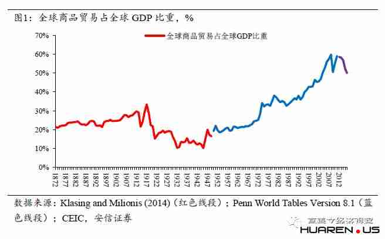

中美贸易摩擦深处的忧虑
编者注：2018年7月28日上午，高善文博士应邀参加了山西证券成立三十周年主题活动，并围绕中美贸易争端话题进行了演讲和交流，主要内容延续了他4月11日在清华大学时事大讲堂相关演讲的分析思路和结论。会后，网络上开始流传关于这次演讲的各种笔记和解读。这些流传的内容均未经过演讲人的审核，反映了相关人员的认知、理解和猜想，其中存在大量的误读和误记。为使得关心这一话题的人更清楚完整地理解我们对这一问题的想法，现将《中美贸易摩擦深处的忧虑》一文再次推送如下，供大家参考和批判。
提要：随着中国经济实力和综合国力的提升，世界经济无可避免地正在进入G2格局，这对目前的全球经济治理体系形成重大挑战，中美之间的摩擦和潜在冲突由此势所难免。
美国国家利益也许可以从三个层次上来划分和理解：一是维护并在全球范围之内推广自己的意识形态、价值观念和生活方式；二是确保美国在核心技术和军事能力上始终处于领先地位，甚至维持压倒性优势；三是在全球范围之内保护和促进美国企业的商业活动。
中国在意识形态上与美国的期望渐有背离；中国制造2025在核心技术领域挑战美国的优势；中国由政府主导经济活动的模式日益威胁美国的自由经济模式和美国企业的竞争地位，这应该是中美经济贸易领域摩擦加剧的深层原因。
中美经贸关系的未来走向充满不确定性，需要担心的前景是过往的全球化走向未来的碎片化，是在双向投资、技术转让、人才流动等领域中美从过去日益融合的局面走向未来不断分离的局面。
风险提示：中美贸易摩擦加剧 全球经济复苏停滞
中美关系是当今世界最复杂的关系，中美贸易摩擦涉及到法律问题、经济贸易问题、以及中美关系的全局。这其中的任何一个领域都需要非常长期的知识积累，需要很高的专业门槛才能够做出全面深入的分析和评论。
对我来讲，在资本市场长期从事宏观经济领域的商业研究，并不具备这些方面的知识积累，突然切入这样一个话题，本身似乎是很奇怪的。
一个重要的由头是在今年年初的时候，应中国金融40人论坛（CF40）的邀请，我同他们一起拜访了华盛顿。这次拜访走访了华盛顿比较主要的经济类的智库以及美国的经济决策部门。在进行此次访问的时候，华盛顿圈子里对华进行贸易打击的策划基本上已经到了尾声阶段，大家的共识不是是否有一场贸易摩擦，而是关注中国会如何反击。
但是从北京出发的时候，我们所留意到的中国国内的媒体以及国内政府官员的公开表态，对于即将到来的贸易摩擦或者贸易战，似乎是没有思想准备的。大家普遍觉得中美关系虽然说不上多好，但是总体上可以管理，处在一个正常的轨道上。
这与我们在华盛顿看到的情况和信息是非常不一样的，而且尽管现在中国媒体把舆论的焦点聚焦在关税和贸易上，实际上就我们当时在华盛顿看到的情况，美国这次对中国发起的在经济领域的一系列行动，远不局限于贸易领域。美国国会最近围绕CFIUS正在进行一系列的辩论，围绕外国企业在美投资法案正要进行一系列重大的修订。美国政府智库和官员都不讳言，CFIUS这次修订主要针对的就是中国。除了CFIUS之外，在中美关系另外一些极其敏感的领域，美国实际上有一系列触及中国底线的行动，比如美国的台湾旅游法。
这些与我们站在国内，从中国媒体获取的以关税贸易为主要领域的中美之间的摩擦，信息并不完全一样。基于这样的原因，考虑到各位同学的专业背景，我们以下从一些中美经贸关系最基础的问题展开讨论。
一、国际贸易摩擦的来源
在讨论中美关系前，首先我们来看一些在经济和贸易领域基础性的问题。
基于现在的知识，我们确定地知道一个基本的事实，市场经济制度是人类组织经济活动最有效的方法，它可以最好的促进经济的增长和人类生活水平的持续提高。在市场经济制度之外，迄今为止人们没有找到其他替代性的制度能够在很长的时间里面持续做到这一点。
在二十世纪初的时候，由苏联所倡导的计划经济制度曾经对市场经济制度提供了一种对立的、替代性的解决方案，但是几十年实践的结果，相对市场经济制度而言，计划经济制度应该说从长期来看是不可行的。
在1929年美国经济大萧条的时候，人们对市场经济制度安排的合理性抱有巨大的怀疑，至少当时的一部分美国学者也曾经抱有巨大的怀疑。但是在金融危机如此严重的2008年，在美国没有人质疑市场经济制度本身，这一点跟1929年形成了鲜明的对比。
如果我们现在说市场经济制度是最有效的、最能够持续地促进人类生活水平提高的制度安排，没有太多的人会对此提出不同的意见。
市场经济制度之所以能够做到这一点，有两条非常关键的原因：一是市场经济制度通过自由交换促进了专业分工，每一个人集中做自己最擅长的事，通过市场实现商品或服务的交换；二是它能促进最充分的竞争，充分的竞争既能刺激分工的深化，又能促进技术的进步、专业知识的积累。这是我们现在已经确定知道的事实。因此市场所达到的范围越广，自由交易交换的范围越宽，整个社会分工的程度就越深，充分竞争的程度就越激烈，整个市场运行相对来讲就会更有效，进而更有利于促进经济的增长和人类生活福利的改善。
但是市场经济制度并不是自发形成的，它需要一系列极其重要的制度安排来支持，这一系列的制度安排之中少了任何一条，市场经济制度都无法正常工作。市场经济制度所需要的基础设施有很多，其中关键的至少有以下几条。
第一条是保护私有产权，包括知识产权，这是市场经济制度得以高效率运行最关键的基础，没有这一条，市场经济制度完全无法工作。保护私有产权或者保护知识产权，看起来显而易见，但在实际操作层面它有非常丰富的细节。
举一个例子。上世纪20年代，上海有公共租界和法租界，它在当时的上海只是占了一小块地区。在租界里如果你拥有房屋，租界管理当局会给你地契。在租界里面所发放的地契，它的信用几乎跟黄金是一样的，具有非常高的信用等级，可以流通，可以从银行质押去获取贷款，具有大家普遍承认的内在价值。与租界相邻的、由中国政府管理的地区，房屋虽然也有地契，但其信用等级要弱得多。
这两栋房屋的建筑质量、地理位置等非常接近，甚至没有区别，但是为什么在信用市场上、在银行借贷市场上会有这么大的区别呢？
关键的原因是其背后政府对产权保护的态度。如果在租界里房客租了你的房子，逾期不支付房租，你可以报警，警察可以帮你把房客赶走，把房子还给你，但是如果是在清政府和民国政府管辖下你去报警，政府对你的保护是大打折扣的。这是一些很具体的、实实在在的案例。
所以保护私有产权不是泛泛而谈的一些概念，它需要很多扎扎实实落实在具体的执法行动上的具体实践。知识产权的情况是一样的。
市场经济制度所需要的第二个极其重要的安排是，市场经济制度必须能够破除垄断，抑制强权，保证公平和充分的竞争。市场在竞争过程之中很容易形成一些垄断，这些垄断有可能转化为政治上的强权。
一个能够正常工作的市场经济制度的安排，必须有能力破除垄断和抑制强权，保护一个相对公平的竞争环境。从当今世界很多国家的情况看，这一点其实并不容易做到。
此外，现代市场经济制度需要通过大量的交易来实现，而要完成交换就需要一种非常便捷可信的汇兑工具和汇兑安排。美国经济学家萨缪尔森曾说过，人类有三大发明：一是学会了管理和控制火；二是发明了轮子；三是发明了中央银行。1492年哥伦布登上美洲大陆的时候，美洲大陆还没有轮子，迄今为止我们不知道除了人类之外，还有其他的动物能够管理和使用火。但是萨缪尔森看来的第三大发明就是中央银行，中央银行使得现在的交易活动可以非常便利、稳定、可靠地大规模展开，而这一点实际上在几百年以前仍然是很难做到的。
总结来说，现在的市场经济制度是我们所知道的最合理的制度安排，但是它需要一系列极其重要的基础设施，这些基础设施不是从天上掉下来的，这些基础设施需要通过政府的强制力来维护。保护产权需要政府的强制力，破除垄断，保护公平和充分的竞争同样需要政府的强制力，发行现代的信用货币，在一定的程度上也需要政府的强制力。
在此基础上我们讨论市场的边界问题。
市场是通过自由交换、专业分工和充分竞争，来提升效率和促进增长的。在这种安排之中，有没有什么样的强大的理由，必须把市场的边界限制在一国的领土范围之内呢？有没有什么合适的理由使得我们相信，市场限制在一个国家的领土范围之内就是最好的？
世界上没有这样的理由。因为市场是通过专业分工交换和自由竞争来实现效率提升的，所以市场内在的力量一定是跨越一个国家的自然领土边界的。它所能实现交换的范围越大、分工越深入、竞争越充分，越能促进参与贸易的所有国家的福利改善。所以在这个意义上来讲，市场的力量延伸到一国的领土范围之外是非常自然而然的事情，它延伸到一国的领土范围之外以后，能够更好地促进所有参与方的福利改善和经济增长。
但是在早期非常长的时间里，大规模的国际贸易在技术上存在一些困难。除了很多法律、汇兑方面的困难之外，早期在技术层面上还面临着运输、信息交流的种种困难。比如说，大规模的交换就涉及到货物的运输，后来生产的全球分工更涉及到大规模的运输。在非常早期的时候在一国的边境之内，长距离的运输甚至都是很困难的，更不要说是跨越大洲的非常长距离的运输。另外一个约束就是信息的流通，商品交换需要实时知道大量的信息、比如买卖的行情、价格的情况、当地需求的波动等等，而信息的大范围流通，在早期的时候也是极其困难的。
我们知道跨大西洋电报的出现是二十世纪初的时间，跨大西洋电报的出现所标志的远距离即时通讯的实现，对贸易在全球范围之内更加快速地推广起到了很重要的作用，尽管它不是唯一的作用。五六十年代标准集装箱的推广大大降低了远洋运输的成本，也在客观上破除了贸易在全球范围之内展开的另外一个约束。信息交流和货物运输问题的解决为市场在更广范围扩张提供了有力保障。
当然，在这些重要变革出现之前，技术也一直在快速进步，国际贸易的成本在不断下降。
前面讲的两点，第一点是市场需要一些强制力量来保证，第二点是市场自然的力量会跨过一国的边界，这两点本质上是相互冲突的。
如果市场要跨越一国的边界去展开，市场就变成了国际贸易、国际经济活动，它面临的基本困难就是用何种力量来实现私有产权的保护、汇兑体系的维持以及保护公平和充分的竞争。市场力量跨越一国的边界面临的一个内在的困难就是，一个国家在内部用来维持市场正常运作的一系列安排，一旦跨越国界以后，它的有效性、可得性就面临巨大的问题。
二、全球贸易发展的历史回顾

图1显示的是从1872年以来全球商品贸易量占全球经济产出的比重。
如果我们认为随着技术的进步，通讯技术和运输技术的不断改善，贸易总是能够促进经济增长，促进福利的改善，那么贸易占整个GDP的比重总体上应该一直在上升，而且只要贸易占GDP的比重在上升，自由贸易的范围越来越广，它就越来越有利于促进经济增长。
我们观察历史的案例，一般认为，如果把1890年到1900年之间作为一个起点，大概到1920年前后，在差不多20到30年的时间里全球贸易，或者是以货物贸易的自由化为标志的全球经济的一体化，曾经经历了一段黄金时期。在这段时期我们可以看到全球的货物贸易量相对全球的GDP是有明显的上升的。经济的全球化，贸易的全球化，商品在全球范围之内流通，这一过程相对GDP以更快的速度展开，使得全球经济经历了第一轮全球化的黄金时期，而这一轮全球化也刺激和促进了当时深刻地参与其中的相关国家的经济的增长和发展。参与这一浪潮的包括美国、英国、西欧、日本等。
但是从1920年前后这个顶点，到第二次世界大战结束，全球化经历了20到30年的严重的收缩和倒退。在二次世界大战前后的时候，经济全球化的程度甚至比美国内战结束的时候还要更低。
尽管人们并不认为这一次全球化的崩溃是当时全球范围内经济萧条的原因，但是所有的人都同意这次经济全球化的倒退延长和加剧了经济大萧条。这一点也是容易理解的，本来市场在跨国的自由交易中，分工程度是非常深的，然后跨国的交易突然中断了，分工只能在非常小的范围之内去展开，这基本地破坏了一个经济所拥有的生产的潜力，基本地破坏了经济所能够生产出来产品的技术边界。